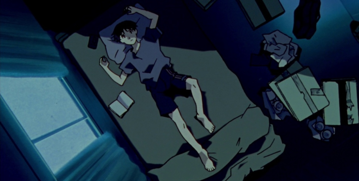

Me llamo Lautaro, podés decirme Tobias. Tengo diecinueve años (19) y nací el 1 de mayo de 2007. Este va a ser un pequeño blog que voy a hacer y actualizar con el paso del tiempo porque algo de provecho voy a tener que sacarle a mis conocimientos de código.
Me la paso triste por lo menos estas semanas. Antes también me sentía así, pero ahora es sofocante. Me encanta dormir temprano; duermo más y no me levanto con sueño, cosa que hace que no me sienta forzado a levantarme. Aunque me duermo temprano, es muy lindo, sobre todo los fines de semana, porque sé que me duermo en muy poco tiempo, pues estoy muy cansado.
Crecí con cosas que me ayudaron a pensar que la vida no es nada más que una comedia triste y una sátira a la felicidad. Me gusta demasiado el contenido que "siento" que te rompe la cuarta pared y te demuestra que no todo es hermoso. Mis héroes son BoJack Horseman, Evangelion, Oyasumi Punpun, Germán Garmendia y las historias de terror.
Me gustaría vivir para amar y para que me amen. Me dejó quien yo pensé y creía que iba a ser la mamá de mis hijos, Maia Aylin Cacciabue (hola, por si ves esto), así que antes de matarme o hacer algún accionar en todo esto, preferí tomarme el tiempo de distraerme con cosas que, quizá, me den algo bueno en la vida. Me encanta sentirme vivo: sentir miedo, amor, felicidad, tristeza. Amo todo lo que me ponga de una manera estimulada. Ya hace tres semanas que me siento con una infelicidad demasiado extrema; supongo que todo en exceso hace mal.
21:57 hrs.